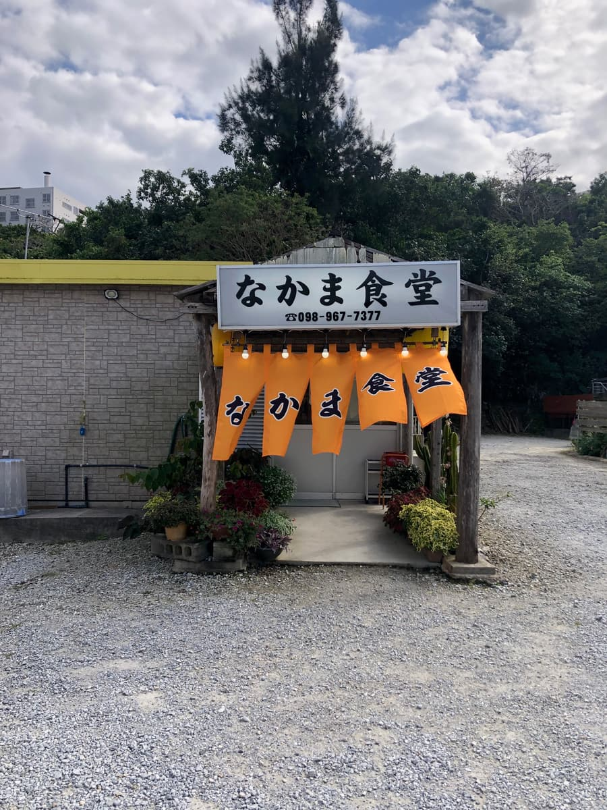
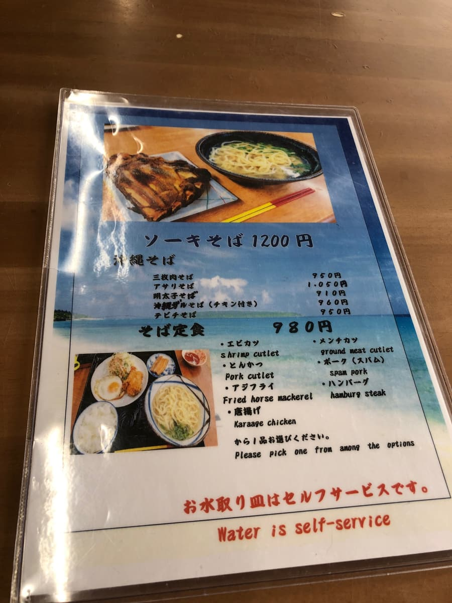
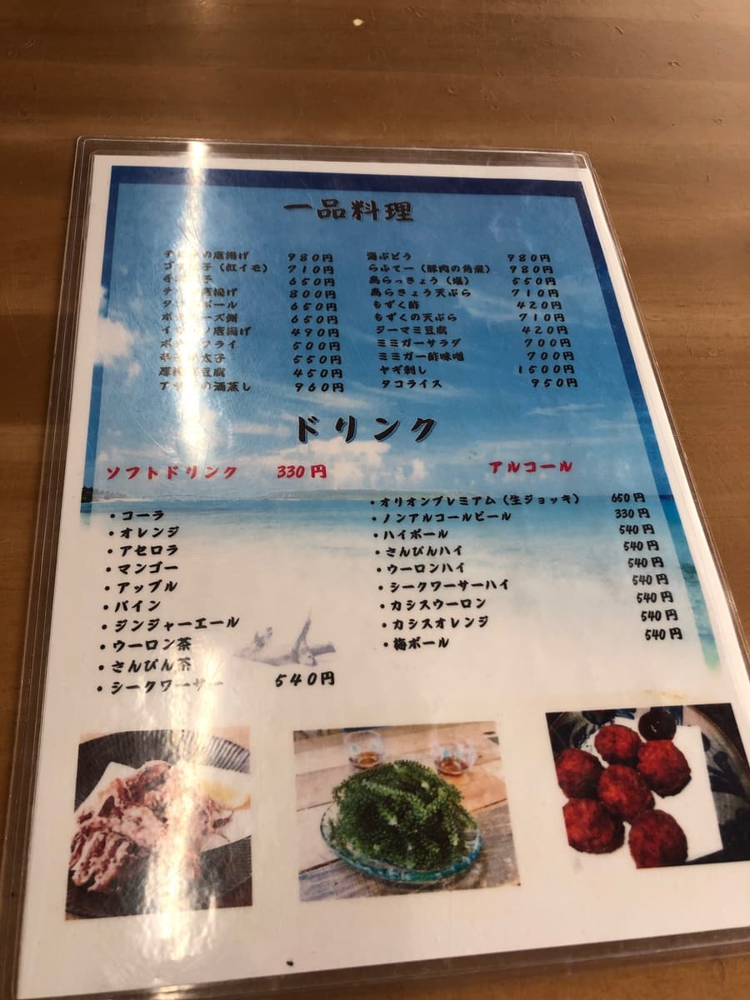
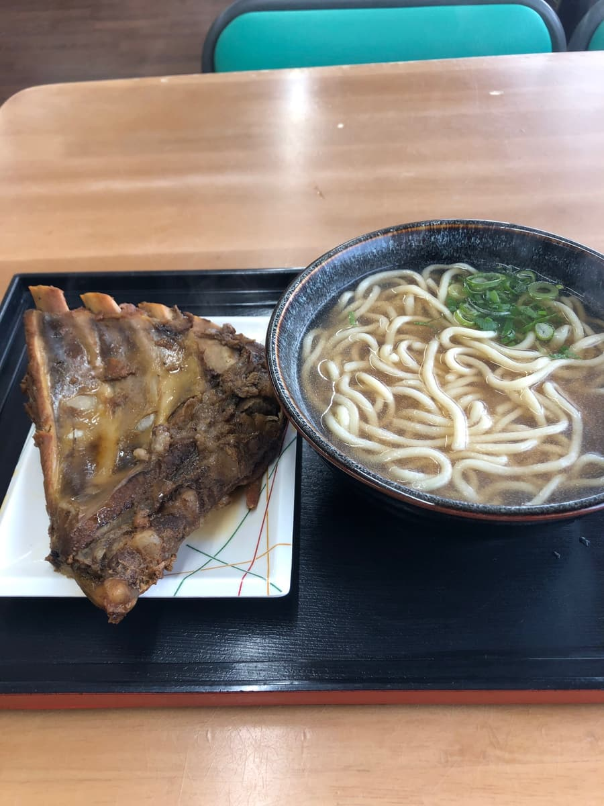
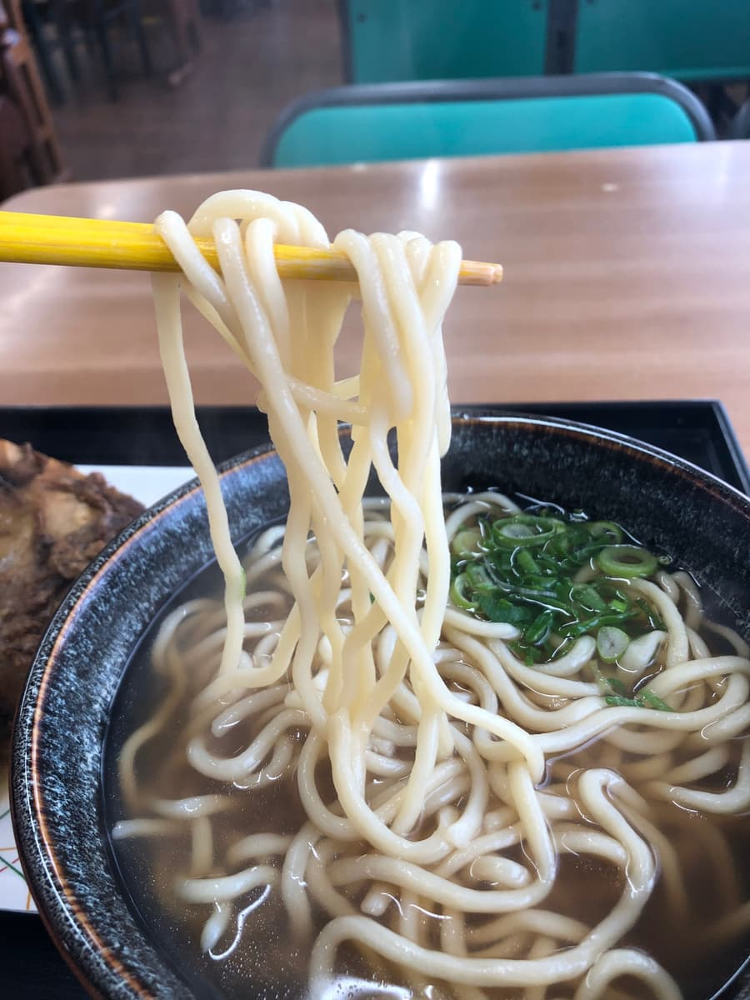
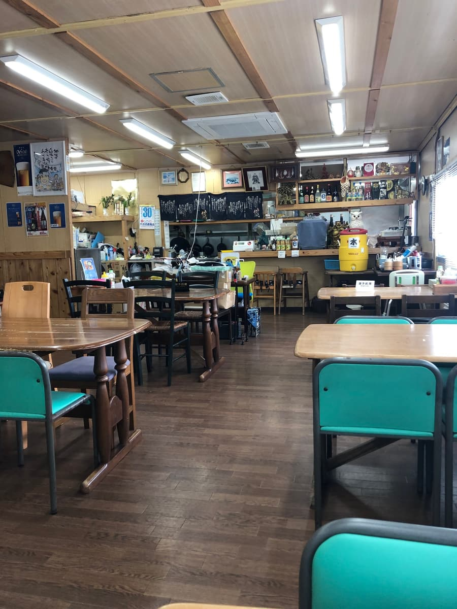
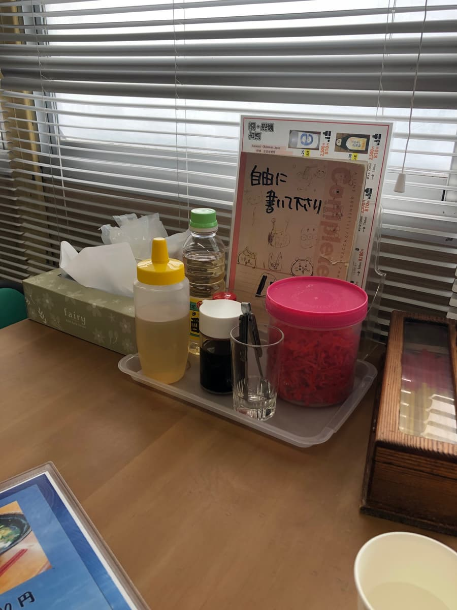

こちらの記事はＡＩ（Chat GPT 4o）で作成し、一部加筆しています😁
2024.11に食べました😄 今回訪れたのは、恩納村名嘉真の「なかま食堂」さん。のぼりが風に揺れるオレンジの暖簾が目印の、どこか懐かしさを感じるローカル食堂です。

この場所に、見た目のインパクトで記憶に残る沖縄そばが待っていました。


この日のオーダーは「ソーキそば（1,200円）」。運ばれてきたトレーを見て、まずは「おおっ」と声が出てしまいました😅

そばとは別皿で登場するのは、まさかの特大スペアリブ。まるでBBQセットのようなサイズ感で、これが“ソーキ”とは思えないビジュアル。食べる前からインパクトで心をつかまれます。
さて、まずはスープからいただきます。澄んだ見た目ながら、口に含むとどこか不思議な味わい。おそらく合わせ出汁がベースだと思いますが、豚骨の風味がやや強めに感じられました。とはいえ、一般的な沖縄そばのスープとは少し違った個性を感じましたね。

そして麺。これはちょっと驚きました。沖縄そばでよく見るような麺ではなく、なんと丸いストレート麺。見た目はまるでうどんのよう。食感は柔らかめ。沖縄そばにしてはかなり珍しいタイプで、「あれ、今日はうどん食べてたっけ？」と一瞬錯覚しそうになります（笑）でもこれはこれでアリだな、と思わせてくれる不思議な魅力があります。
主役のスペアリブ、これはもう文句なしにボリューム満点💥 甘めのタレでしっかり味付けされていて、ホロホロに煮込まれてます。骨から肉がするりと外れるくらい柔らかく、しっかりと味が染みていて、肉単体でも十分に満足感があります。


お店の雰囲気もアットホームで、観光のお客さんが多いのも納得。メニューを見るとそば定食や一品料理も豊富で、昼飲みや家族連れでも使いやすそうな食堂です。
味は「絶品！」というよりは「普通に美味しい」系。ただ、このスペアリブのビジュアルと個性ある麺・スープの組み合わせは一度は体験してほしいですね。観光客にもウケそうな、写真映えする一杯でした📷
評価（9点/15点）：普通に美味しいです。“特大スペアリブ”を体験したい方には、なかま食堂さんのソーキそば、ぜひおすすめです🍜✨
麺 ：★★★☆☆（3）
スープ：★★★☆☆（3）
具 ：★★★☆☆（3）